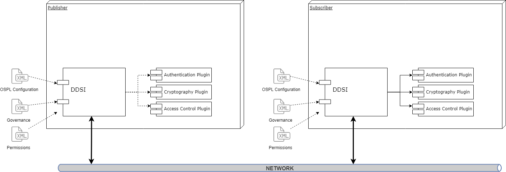
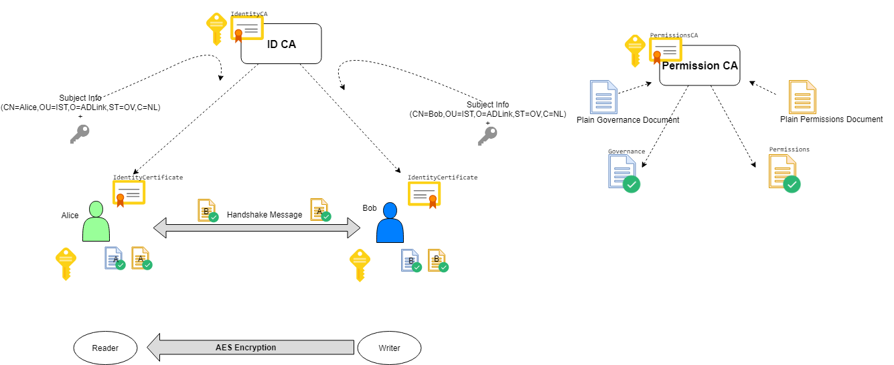
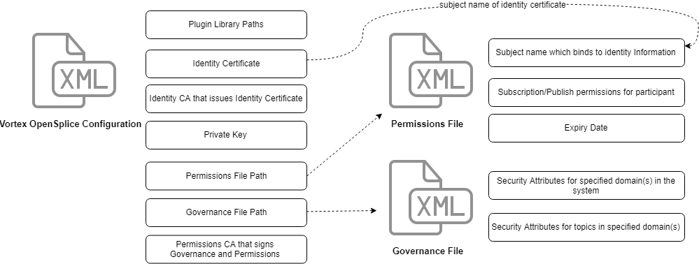
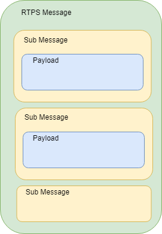

DDS Security¶
CycloneDDS is compliant with The Object Management Group (OMG) DDS Security specification.
This specification defines the Security Model and Service Plugin Interface (SPI) architecture for compliant DDS implementations. The DDS Security Model is enforced by the invocation of these SPIs by the DDS implementation.
{kind=link}
The three plugins that comprise the DDS Security Model in CycloneDDS are:
Authentication Service Plugin
Provides the means to verify the identity of the application and/or user that invokes operations on DDS. Includes facilities to perform mutual authentication between participants and establish a shared secret.
AccessControl Service Plugin
Provides the means to enforce policy decisions on what DDS related operations an authenticated user can perform. For example, which domains it can join, which Topics it can publish or subscribe to, etc.
Cryptographic Service Plugin
Implements (or interfaces with libraries that implement) all cryptographic operations including encryption, decryption, hashing, digital signatures, etc. This includes the means to derive keys from a shared secret.
CycloneDDS provides built-in implementations of these plugins. Authentication uses PKI (Public Key Infrastructure) with a pre-configured shared Certificate Authority, RSA is used for authentication and Diffie-Hellman is used for key exchange. AccessControl use Permissions document signed by shared Certificate Authority. Cryptography uses AES-GCM (AES using Galois Counter Mode) for encryption and AES-GMAC for message authentication.
Security plugins are dynamically loaded where the locations are defined in CycloneDDS configuration or Participant QoS settings.
Brief information about PKI (public key infrastructure)¶
The comprehensive system required to provide public-key encryption and digital signature services is known as a public-key infrastructure (PKI). The purpose of a PKI is to manage keys and certificates. By managing keys and certificates through a PKI, an organization establishes and maintains a trustworthy networking environment.
Public Key Cryptography: Each user has a key pair, generated during the initial certificate deployment process, that is comprised of a public key, which is shared, and a private key, which is not shared. Data is encrypted with the user’s public key and decrypted with their private key. Digital signatures, used for non-repudiation, authentication and data integrity, are also generated using public key cryptography.
Identity Certificate
This is an electronic document used to prove the ownership of a public key. The certificate includes information about the key, information about the identity of its owner (called the subject), and the digital signature of an entity that has verified the certificate’s contents (called the issuer). If the signature is valid, and the software examining the certificate trusts the issuer, then it can use that key to communicate securely with the certificate’s subject.
Certificate Authority
This issues user certificates and acts as the chief agent of trust. When issuing a certificate to a user, the CA signs the certificate with its private key in order to validate it. During electronic transactions the CA also confirms that certificates are still valid. Certificates may be revoked for various reasons. For example, a user may leave the organization or they may forget their secret passphrase, the certificate may expire or become corrupt. This process is usually accomplished through the use of a Certificate Revocation List (CRL) which is a list of the certificates that have been revoked. Only the certificates that have been revoked appear on this list.
Subject of Identity Certificate
This is the identity to be secured. It contains information such as common name (CN), organization (OU), state (ST) and country (C).
Subject Name
This is aka distinguished name and is the string representation of certificate subject.
ie: emailAddress=alice@adlink.ist,CN=Alice,OU=IST,O=ADLink,ST=OV,C=NL
PKI Usage in DDS Security¶
{kind=link}
Alice and Bob are the DDS participants who have their private and public keys. Identitity Certificate Authority (ID CA) has its own self-signed certificate (IdentityCA in the diagram). ID CA gets Alice’s subject information and public key and generates an IdentityCertificate for her. Alice’s certificate includes her public key and certificate of ID CA; so that her certificate can be verified if it is really issued by ID CA.
Access Control is configured with governance and permissions files. Governance file defines the security behavior of domains and topics. Permissions file contains the permissions of the domain participant, topics, readers and writers, binds them to identity certificate by subject name (distinguished name).
Governance files and Permissions files are signed by Permission CA. Signed documents also contains Permissions CA certificate; so that they can be verified if they are really issued by Permissions CA.
Authenticated participants perform a handshake with each other and generate a shared key by Diffie-Hellman key exchange. This shared key is used for encrypting/decrypting data with AES.
During the handshake Alice checks Bob’s certificate and Bob’s Permissions file if they are really issued by the ID CA certificate and Permissions CA Certificate that she has. Also Bob checks Alice’s certificate and Alice’s Permissions file if they are really issued by the ID CA certificate and Permissions CA that he has. Permissions files can contain permissions for several identities; so subject name of identity certificate exist in permissions file to establish a binding between identity and its permissions.
There are several ways to set up the certificates and signed configuration files to be used with Cyclone DDS Security. One of them is using OpenSSL, which is described in section Creating certificates using OpenSSL.
Configuration¶
{kind=link}
The configuration of DDS Security is split up into two parts.
Plugins Configuration¶
CycloneDDS gets the security configuration from XML configuration elements or from the participant QoS policies as stated in the DDS Security specification.
This behavior allows applications to use DDS Security without recompiling the binaries. Only supplying a new configuration with DDS Security enabled is enough to switch from a non-secure to a secure deployment. The configuration is at domain level, which means that all participants created for that domain receive the same DDS security settings.
The configuration options for a domain are bundled in the DDSSecurity configuration
section in the CycloneDDS configuration. Every DDS Security plugin has its own configuration
sub-section.
Authentication Properties¶
To enable authentication for a node, it has to be configured with an identity certificate
(DDSSecurity/Authentication/IdentityCertificate). This identity certificate is used to
authenticate all participants of that particular CycloneDDS domain. Associated with the
identity certificate is the corresponding private key
(DDSSecurity/Authentication/PrivateKey). The private key may either be a 2048-bit RSA
or a 256-bit Elliptic Curve Key with a prime256v1 curve.
The certificate of identity CA, which is the issuer of the node’s identity certificate,
is configured in DDSSecurity/Authentication/IdentityCA. The public key of the
identity CA (as part of its certificate) shall either be a 2048-bit RSA key or a 256-bit
Elliptic Curve Key for the prime256v1 curve. The identity CA certificate can be a
self-signed certificate.
The identity certificate, private key and the identity CA should be a X509 document in PEM
format. It may either be specified directly in the configuration file (as CDATA, prefixed
with data:,) or the configuration file should contain a reference to a corresponding
file (prefixed with file:).
Optionally the private key could be protected by a password
(DDSSecurity/Authentication/Password).
Furthermore the CycloneDDS configuration allows configuring a directory containing additional
identity CA’s which are used to verify the identity certificates that are received from remote instances
(DDSSecurity/Authentication/TrustedCADirectory). This option allows multiple identity
CAs throughout the system.
Access Control Properties¶
A governance document (DDSSecurity/AccessControl/Governance), a permissions document
(DDSSecurity/AccessControl/Permissions) and the permissions CA certificate
(DDSSecurity/AccessControl/PermissionsCA) are required for the access control plugin.
Similar to the authentication plugin properties, these values can be provided as CDATA or
by using a path to a file.
Cryptography Properties¶
The cryptography plugin has no properties in the configuration.
Access Control Configuration¶
Access Control configuration consists of Governance document and Permissions document. Both governance and permissions files must be signed by the Permissions CA in S/MIME format. Participants use their own permissions CA to validate remote permissions. So, all permissions CA Certificates must be the same for all participants.
The signed document should use S/MIME version 3.2 format as defined in IETF RFC 5761 using SignedData Content Type (section 2.4.2 of IETF RFC 5761) formatted as multipart/signed (section 3.4.3 of IETF RFC 5761). This corresponds to the mime-type application/pkcs7-signature. Additionally the signer certificate should be be included within the signature.
Governance Document¶
The Governance document defines the security behavior of domains and topics. It is an XML document and its format is specified in OMG DDS Security Version 1.1 Section 9.4.1.2.3.
This section describes the properties that can be specified in a permissions document. An example of a governance document is provided in Create a signed governance document. The options that are specified in Governance document must match with the remote node to establishing communication.
Protection Kinds¶
The domain governance document provides a means for the application to configure the kinds of cryptographic transformation applied to the complete RTPS Message, certain RTPS SubMessages, and the SerializedPayload RTPS submessage element that appears within the Data.
{kind=link}
The configuration allows specification of five protection levels: NONE, SIGN, ENCRYPT, SIGN_WITH_ORIGIN_AUTHENTICATION and ENCRYPT_WITH_ORIGIN_AUTHENTICATION.
- NONE
indicates no cryptographic transformation is applied.
- SIGN
indicates the cryptographic transformation shall be purely a message authentication code (MAC), that is, no encryption is performed.
- ENCRYPT
indicates the cryptographic transformation shall be an encryption followed by a message authentication code (MAC) computed on the ciphertext, also known as Encrypt-then-MAC.
- SIGN_WITH_ORIGIN_AUTHENTICATION
indicates the cryptographic transformation shall be purely a set of message authentication codes (MAC), that is, no encryption is performed. This cryptographic transformation shall create a first “common authenticationcode” similar to the case where Protection Kind is SIGN. In addition the cryptographic transformation shall create additional authentication codes, each produced with a different secret key. The additional MACs prove to the receiver that the sender originated the message, preventing other receivers from impersonating the sender.
- ENCRYPT_WITH_ORIGIN_AUTHENTICATION
indicates the cryptographic transformation shall be an encryption followed by a message authentication code (MAC) computed on the ciphertext, followed by additional authentication codes, Each of the additional authentication codes shall use a different secret key. The encryption and first (common) authentication code is similar to ones produced when the Protection Kind is ENCRYPT. The additional authentication codes are similar to the ones produced when the Protection Kind is SIGN_WITH_ORIGIN_AUTHENTICATION.
Participant attributes¶
- Allow Unauthenticated Participants
This is used for allowing communication with non-secure participants. If this option is enabled, secure participant can communicate with non-secure participant by only non-protected topics.
- Enable Join Access Control
If this option is enabled, remote participant permissions are checked if its subject name is allowed to create a topic anyhow.
- Discovery Protection Kind
Protection attribute for discovery communication when it is enabled for topic. Please see the DDS Security specification document for available options.
- Liveliness Protection Kind
Protection attribute for liveliness communication when it is enabled for topic. Please see the DDS Security specification document for available options.
- RTPS Protection Kind
Protection attribute for all messages on the wire. Please see the DDS Security specification document for available options. If encryption is selected for RTPS, there is no need to encrypt submessages (metadata_protection_kind) and payloads (data_protection_kind) which are defined in topic settings.
Topic Attributes¶
- Enable Discovery protection:
If enabled, discovery is protected according to Discovery Protection Kind attribute of corresponding participant.
- Enable Liveliness protection:
If enabled, liveliness is protected according to Liveliness Protection Kind attribute of corresponding participant.
- Enable Read Access Control:
If enabled, the permissions document is checked if the participant is allowed to create a datareader for the related topic.
- Enable Write Access Control:
If enabled, the permissions document is checked if the participant is allowed to create a datawriter for the related topic.
- Metadata protection Kind:
Protection attribute for submessages.
- Data protection Kind:
Protection attribute for data payload.
There are different settings for different domain ranges. The domain rules are evaluated in the same order as they appear in the document. A rule only applies to a particular DomainParticipant if the domain Section matches the DDS domain_id to which the participant belongs. If multiple rules match, the first rule that matches is the only one that applies.
The topic access rules are evaluated in the same order as they appear within the <topic_access_rules> Section. If multiple rules match the first rule that matches is the only one that applies.
fnmatch pattern matching can be used for topic expressions including the following patterns
Pattern |
Meaning |
|---|---|
* |
matches everything |
? |
matches any single character |
[seq] |
matches any character in seq |
[!seq] |
matches any character not in seq |
Permissions Document¶
The permissions document is an XML document containing the permissions of the domain participant and binding them to the subject name of the DomainParticipant as defined in the identity certificate. Its format is specified in OMG DDS Security Version 1.1 Section 9.4.1.3.
This section describes the properties that can be specified in a permissions document. An example of a permissions document is provided in Creating a signed permissions document.
Validity period¶
It is checked before creating participant. Validity period is also checked during handshake with remote participant; expired remote permissions document prevents communications to be established.
Subject Name¶
The subject name must match with Identity Certificate subject. It is checked during create participant and during handshake with remote participant. Use the following openssl command to get subject name from identity certificate:
openssl x509 -noout -subject -nameopt RFC2253 -in <identity_certificate_file.pem>
Rules¶
Participant permissions are defined by set of rules. The rules are applied in the same order that appear in the document. If the criteria for the rule matches the domain_id join and/or publish or subscribe operation that is being attempted, then the allow or deny decision is applied. If the criteria for a rule does not match the operation being attempted, the evaluation shall proceed to the next rule. If all rules have been examined without a match, then the decision specified by the “default” rule is applied. The default rule, if present, must appear after all allow and deny rules. If the default rule is not present, the implied default decision is DENY. The matching criteria for each rule specify the domain_id, topics (published and subscribed), the partitions (published and subscribed), and the data-tags associated with the DataWriter and DataReader.
For the grant to match there shall be a match of the topics, partitions, and data-tags criteria. This is interpreted as an AND of each of the criteria. For a specific criterion to match (e.g., <topics>) it is enough that one of the topic expressions listed matches (i.e., an OR of the expressions with the <topics> section).
fnmatch pattern matching can be used for topic expressions and partition expressions.
Logging and tracing¶
The security implementation uses the standard logging and tracing mechanism in CycloneDDS. The following is written to log and trace:
Configuration errors such as plugin library files, certificate files, governance and permissions files that can not be found on filesystem.
Permission errors such as denied permission for creating writer of a topic.
Attribute mismatch errors such as mismatches of security attributes between participants, topics, readers and writers.
Integrity errors such as Permissions file-Permissions CA and Identity Cert-Identity CA integrity.
Local subscription, publication and topic permission errors are written as errors. Remote participation, subscription and publication permission errors are written to log as warning messages.
Data Communication And Handshake Process¶
Authentication handshake between participants starts after participant discovery. If a reader and a writer created during that period, their match will be delayed until after the handshake succeeds. This means, during the handshake process, volatile data will be lost, just like there is no reader.
After publication match, the encryption / decryption keys are exchanged between reader and writer. Best-effort data that are sent during this exchange will be lost, however reliable data will be resent.
DDS Secure Discovery¶
Just like normal operation, Cyclone DDS discovers remote participants, topics, readers and writers. However, when DDS Security is enabled, it is more complex and will take a longer time (due to the handshaking that is required). The effort to perform discovery grows quadratically in the number of nodes. This can become a problem if the system contains a number of slow platforms or is large.
Proprietary builtin endpoints¶
The DDS standard contains some builtin endpoints. A few are added by the DDS Security specification. The behaviour of all these builtin endpoints are specified (and thus are be handled by the plugins that implement the DDS Security specification), meaning that they don’t have to be present in the Governance or Permissions documents and the users don’t have to be bothered with them.
A few of these builtin endpoints slave according to the <discovery_protection_kind> within the Governance document. In short, related submessages are protected according to the value of <discovery_protection_kind>. This protects meta information that is send during the discovery phase.
DataTag Permissions¶
Data Tags provide an extra (optional) level of identification. This can mean f.i. that a certain reader is not allowed to read data from writer A but it is allowed to read from writer B (all the same topic).
This optional feature is not yet supported.
Example configuration¶
This sections show an example configuration for DDS Security in Cyclone DDS. First step is creating the required CA and identity certificates. Then a governance and permissions document is created to configure access control. Next an example configuration (XML) that is using these assets is shown, and a code fragment that shows how to set the security properties by using the participant QoS.
Creating certificates using OpenSSL¶
This section describes how to generate a set of CA and identity certificates using OpenSSL, and how to use OpenSSL to sign the governance and access control configuration files.
First step is generation of the CA for identity management (authentication). First we create the private key for the CA by:
openssl genrsa -out example_id_ca_priv_key.pem 2048
Next we can generate the certificate for the identity CA (which is in this case a self-signed certificate):
openssl req -x509 -key example_id_ca_priv_key.pem -out example_id_ca_cert.pem -days 3650 -subj "/C=NL/ST=OV/L=Locality Name/OU=Example OU/O=Example ID CA Organization/CN=Example ID CA/emailAddress=authority@cycloneddssecurity.adlinktech.com"
We repeat these steps for generating the private key of the permissions CA (used for signing the AccessControl configuration files):
openssl genrsa -out example_perm_ca_priv_key.pem 2048
And the self-signed certificate for the permissions CA:
openssl req -x509 -key example_perm_ca_priv_key.pem -out example_perm_ca_cert.pem -days 3650 -subj "/C=NL/ST=OV/L=Locality Name/OU=Example OU/O=Example CA Organization/CN=Example Permissions CA/emailAddress=authority@cycloneddssecurity.adlinktech.com"
Create an Identity Certificate¶
Now that we have set up the CA for identity management, we can create an identity certificate signed by this CA and the private key corresponding to this identity. Here we are creating a private key and certificate for identity named Alice. These steps need to be repeated for each identity in the system.
Generating the private key for Alice’s identity:
openssl genrsa -out example_alice_priv_key.pem 2048
Now we create a ‘certificate signing request’ (CSR) to request the identity CA to generate a certificate:
openssl req -new -key example_alice_priv_key.pem -out example_alice.csr -subj "/C=NL/ST=OV/L=Locality Name/OU=Organizational Unit Name/O=Example Organization/CN=Alice Example/emailAddress=alice@cycloneddssecurity.adlinktech.com"
Next Alice’s identity certificate is created:
openssl x509 -req -CA example_id_ca_cert.pem -CAkey example_id_ca_priv_key.pem -CAcreateserial -days 3650 -in example_alice.csr -out example_alice_cert.pem
Now the file ‘example_alice_cert.pem’ can be used as IdentityCertificate in the DDS Security
authentication configuration and ‘example_alice_priv_key.pem’ for the PrivateKey setting. The
certificate of the CA used for signing this identity, ‘example_id_ca_cert.pem’ in this example,
should be used for the IdentityCA configuration setting.
Create a signed governance document¶
An example of a governance document that is using signing for submessage and encrypted payload:
1<?xml version="1.0" encoding=\"utf-8\"?>
2<dds xmlns:xsi="http://www.w3.org/2001/XMLSchema-instance" xsi:noNamespaceSchemaLocation="https://www.omg.org/spec/DDS-SECURITY/20170901/omg_shared_ca_governance.xsd">
3 <domain_access_rules>
4 <domain_rule>
5 <domains>
6 <id_range>
7 <min>0</min>
8 <max>230</max>
9 </id_range>
10 </domains>
11 <allow_unauthenticated_participants>false</allow_unauthenticated_participants>
12 <enable_join_access_control>true</enable_join_access_control>
13 <discovery_protection_kind>NONE</discovery_protection_kind>
14 <liveliness_protection_kind>NONE</liveliness_protection_kind>
15 <rtps_protection_kind>NONE</rtps_protection_kind>
16 <topic_access_rules>
17 <topic_rule>
18 <topic_expression>*</topic_expression>
19 <enable_discovery_protection>true</enable_discovery_protection>
20 <enable_liveliness_protection>true</enable_liveliness_protection>
21 <enable_read_access_control>true</enable_read_access_control>
22 <enable_write_access_control>true</enable_write_access_control>
23 <metadata_protection_kind>SIGN</metadata_protection_kind>
24 <data_protection_kind>ENCRYPT</data_protection_kind>
25 </topic_rule>
26 </topic_access_rules>
27 </domain_rule>
28 </domain_access_rules>
29</dds>
As mentioned before, the governance document needs to be signed by the permissions CA that was created above. This can be done by using this openssl command:
openssl smime -sign -in example_governance.xml -text -out example_governance.p7s -signer example_perm_ca_cert.pem -inkey example_perm_ca_priv_key.pem
Creating a signed permissions document¶
The permissions document is an XML document that contains the permissions of the participant and binds them to the subject name of the identity certificate (distinguished name) for the participant as defined in the DDS:Auth:PKI-DH authentication plugin.
An example of a permissions document:
1<?xml version="1.0" encoding="utf-8" ?>
2<dds xmlns:xsi="http://www.w3.org/2001/XMLSchema-instance"
3 xsi:noNamespaceSchemaLocation="https://www.omg.org/spec/DDS-SECURITY/20170901/omg_shared_ca_permissions.xsd">
4 <permissions>
5 <grant name="default_permissions">
6 <subject_name>emailAddress=alice@cycloneddssecurity.adlinktech.com,CN=Alice Example,O=Example Organization,OU=Organizational Unit Name,L=Locality Name,ST=OV,C=NL</subject_name>
7 <validity>
8 <!-- Format is CCYY-MM-DDThh:mm:ss[Z|(+|-)hh:mm] in GMT -->
9 <not_before>2020-01-01T01:00:00</not_before>
10 <not_after>2120-01-01T01:00:00</not_after>
11 </validity>
12 <allow_rule>
13 <domains>
14 <id_range>
15 <min>0</min>
16 <max>230</max>
17 </id_range>
18 </domains>
19 <publish>
20 <topics>
21 <topic>*</topic>
22 </topics>
23 <partitions>
24 <partition>*</partition>
25 </partitions>
26 </publish>
27 <subscribe>
28 <topics>
29 <topic>*</topic>
30 </topics>
31 <partitions>
32 <partition>*</partition>
33 </partitions>
34 </subscribe>
35 </allow_rule>
36 <default>DENY</default>
37 </grant>
38 </permissions>
39</dds>
This document also needs to be signed by the permissions CA:
openssl smime -sign -in example_permissions.xml -text -out example_permissions.p7s -signer example_perm_ca_cert.pem -inkey example_perm_ca_priv_key.pem
Example DDS Security configuration¶
With the above steps we have all certificates and documents that are required when configuring security. In the next two sections, both configuring security by properties and configuring security by DDS configuration are covered.
Security properties in participant QoS¶
This code fragment shows how to set the security properties to a QoS object and use this QoS when creating a participant:
1dds_qos_t * qos = dds_create_qos();
2
3dds_qset_prop(qos, "dds.sec.auth.library.path", "dds_security_auth");
4dds_qset_prop(qos, "dds.sec.auth.library.init", "init_authentication");
5dds_qset_prop(qos, "dds.sec.auth.library.finalize", "finalize_authentication");
6dds_qset_prop(qos, "dds.sec.auth.identity_ca", "file:/path/to/example_id_ca_cert.pem");
7dds_qset_prop(qos, "dds.sec.auth.private_key", "file:/path/to/example_alice_priv_key.pem");
8dds_qset_prop(qos, "dds.sec.auth.identity_certificate", "file:/path/to/example_alice_cert.pem");
9
10dds_qset_prop(qos, "dds.sec.crypto.library.path", "dds_security_crypto");
11dds_qset_prop(qos, "dds.sec.crypto.library.init", "init_crypto");
12dds_qset_prop(qos, "dds.sec.crypto.library.finalize", "finalize_crypto");
13
14dds_qset_prop(qos, "dds.sec.access.library.path", "dds_security_ac");
15dds_qset_prop(qos, "dds.sec.access.library.init", "init_access_control");
16dds_qset_prop(qos, "dds.sec.access.library.finalize", "finalize_access_control");
17dds_qset_prop(qos, "dds.sec.access.permissions_ca", "file:/path/to/example_perm_ca_cert.pem");
18dds_qset_prop(qos, "dds.sec.access.governance", "file:/path/to/example_governance.p7s");
19dds_qset_prop(qos, "dds.sec.access.permissions", "file:/path/to/example_permissions.p7s");
20
21dds_entity_t participant = dds_create_participant(0, qos, NULL);
Configure security in Cyclone configuration¶
As an alternative for using the QoS, security settings can also be applied using the CycloneDDS configuration XML. In case both QoS and the configuration XML contain security settings, the values from the QoS will be used and the security settings in the configuration XML are ignored.
The following XML fragment shows how to set security settings through configuration:
1<Domain id="any">
2 <DDSSecurity>
3 <Authentication>
4 <Library initFunction="init_authentication" finalizeFunction="finalize_authentication" path="dds_security_auth"/>
5 <IdentityCA>file:/path/to/example_id_ca_cert.pem</IdentityCA>
6 <IdentityCertificate>file:/path/to/example_alice_cert.pem</IdentityCertificate>
7 <PrivateKey>file:/path/to/example_alice_priv_key.pem</PrivateKey>
8 </Authentication>
9 <Cryptographic>
10 <Library initFunction="init_crypto" finalizeFunction="finalize_crypto" path="dds_security_crypto"/>
11 </Cryptographic>
12 <AccessControl>
13 <Library initFunction="init_access_control" finalizeFunction="finalize_access_control" path="dds_security_ac"/>
14 <PermissionsCA>file:/path/to/example_perm_ca_cert.pem</PermissionsCA>
15 <Governance>file:/path/to/example_governance.p7s</Governance>
16 <Permissions>file:/path/to/example_permissions.p7s</Permissions>
17 </AccessControl>
18 </DDSSecurity>
19</Domain>
To use this configuration file for an application, set the CYCLONEDDS_URI environment variable to this config file:
export CYCLONEDDS_URI=/path/to/secure_config.xml
Bacause this example configuration uses the attribute id=any for the domain element, any participant
that is created (which implicitly creates a domain) in an application using this configuration gets
these security settings.
External Plugin Development¶
DDS Security consists of three plugins (authentication, cryptography and access control). CycloneDDS comes with built-in security plugins that comply with OMG DDS Security specification. The plugins are loaded in the run-time. However, you can also implement your own custom plugin by implementing the given API according to OMG DDS Security specification. You can implement all of the plugins or just one of them.
The followings are the key points for implementing you own plugin:
Interface¶
Implement all plugin specific functions with exactly same prototype. Plugin specific function interfaces are in dds_security_api_access_control.h, dds_security_api_authentication.h and dds_security_api_cryptography.h header files accordingly.
Init and Finalize¶
A plugin should have an init and a finalize functions. plugin_init and plugin_finalize interfaces are given in dds_security_api.h header file and function should be same as in configuration file. Init function is called once, just after the plugin is loaded. Finalize function is called once, just before the plugin is unloaded.
Inter Plugin Communication¶
There is a shared object (DDS_Security_SharedSecretHandle) within authentication and cryptography plugins. If you want to implement only one of them and use the builtin for the other one, you have to get or provide the shared object properly. DDS_Security_SharedSecretHandle is the integer representation of DDS_Security_SharedSecretHandleImpl struct object. Cryptography plugin gets the DDS_Security_SharedSecretHandle from authentication plugin and casts to DDS_Security_SharedSecretHandleImpl struct. Then all needed information can be retieved through DDS_Security_SharedSecretHandleImpl struct:
typedef struct DDS_Security_SharedSecretHandleImpl {
DDS_Security_octet* shared_secret;
DDS_Security_long shared_secret_size;
DDS_Security_octet challenge1[DDS_SECURITY_AUTHENTICATION_CHALLENGE_SIZE];
DDS_Security_octet challenge2[DDS_SECURITY_AUTHENTICATION_CHALLENGE_SIZE];
} DDS_Security_SharedSecretHandleImpl;
Error Codes¶
Most of the plugin functions have parameter for reporting exception. The following exception codes should be used in the reported exception data according to the situation. dds_security_api_err.h header file contains the code and message constants.
Code |
Message |
|---|---|
0 |
(OK) |
100 |
Can not generate random data |
110 |
Identity empty |
111 |
Participant Crypto Handle empty |
112 |
Permission Handle empty |
113 |
Invalid Crypto Handle |
114 |
Invalid argument |
115 |
Invalid Crypto token |
116 |
Invalid parameter |
117 |
File could not be found, opened or is empty, path: %s |
118 |
Unknown or unexpected transformation kind |
119 |
Message cannot be authenticated, incorrect signature |
120 |
Can not open trusted CA directory |
121 |
Identity CA is not trusted |
122 |
Certificate start date is in the future |
123 |
Certificate expired |
125 |
Certificate authentication algorithm unknown |
126 |
Failed to allocate internal structure |
127 |
Failed to parse PKCS7 SMIME document |
128 |
Property is missing: (%s) |
129 |
Permissions document is invalid |
130 |
Governance document is invalid |
131 |
Operation is not permitted in this state |
132 |
Remote permissions document is not available |
133 |
Certificate is invalid |
134 |
Certificate type is not supported |
135 |
Governance property is required |
136 |
Permissions CA property is required |
137 |
Can not parse governance file |
138 |
Can not parse permissions file |
139 |
Could not find permissions for topic |
140 |
Could not find domain %d in permissions |
141 |
Could not find domain %d in governance |
142 |
Could not find %s topic attributes for domain(%d) in governance |
143 |
PluginClass in remote token is incompatible |
144 |
MajorVersion in remote token is incompatible |
145 |
Access denied by access control |
146 |
Subject name is invalid |
147 |
Permissions validity period expired for %s |
148 |
Permissions validity period has not started yet for %s |
149 |
Could not find valid grant in permissions |
150 |
Unsupported URI type: %s |
151 |
The payload is not aligned at 4 bytes |
152 |
Cannot open trusted CA directory: maximum number exceeded |
200 |
Undefined Error Message |